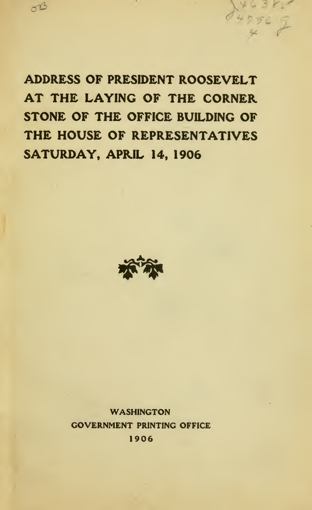
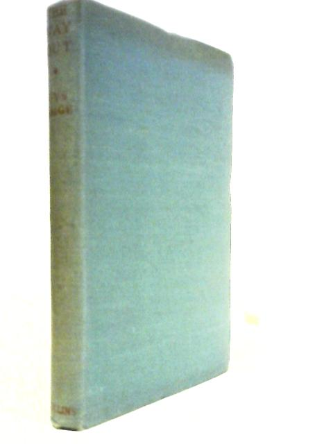
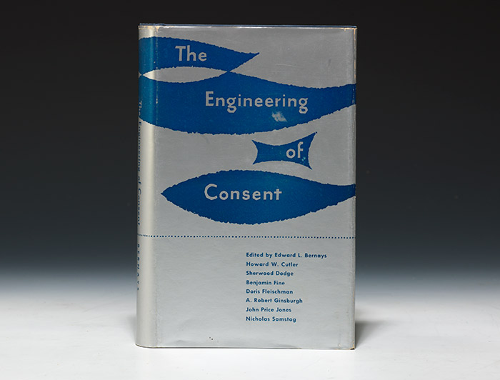

1:19:43 · 15 OPERE
È questa politica davvero inefficiente?
Il filo del discorso
La domanda iniziale mette in discussione l’idea che i risultati negativi della politica dipendano sempre dall’incompetenza. Il relatore propone un’altra lettura: una condotta può apparire inefficiente rispetto agli scopi dichiarati e risultare efficace rispetto a interessi diversi. Per sostenerla collega vicende della storia italiana, trasformazioni economiche e comunicazione pubblica. Il passaggio dagli effetti osservati all’intenzione di produrli è però una sua ipotesi interpretativa: la ricorrenza di un esito non dimostra da sola un piano comune, né rende equivalenti eventi con responsabilità e accertamenti differenti. L’argomento si sposta presto sull’informazione. Il relatore sostiene che media incapaci di rendere il cittadino consapevole possano invece funzionare molto bene come strumenti di orientamento e distrazione. Richiama i Sileni di Alcibiade di Erasmo e, attraverso Dollarocracy di John Nichols e Robert W. McChesney, il rapporto fra concentrazione economica e declino del giornalismo. Il discorso di Theodore Roosevelt The Man with the Muck-Rake offre un modello di denuncia degli abusi. La citazione selezionata nel video va letta con il suo contesto: Roosevelt chiede anche veridicità e rifiuta gli attacchi indiscriminati alle persone. Alla critica del potere il relatore oppone una tradizione di responsabilità morale. Nella premessa all’Avventura d’un povero cristiano di Ignazio Silone trova l’episodio dei pastori che aiutano soldati in fuga pur conoscendo il rischio personale. La lettura religiosa delle Beatitudini e il richiamo a Shakespeare accompagnano questa riflessione sulla coscienza. Il relatore precisa che valorizzare alcuni elementi della tradizione occidentale non significa attribuire alle altre culture un’assenza di coscienza. Le diagnosi di decadenza e il giudizio sulla società contemporanea restano suoi orientamenti filosofici e politici. Una parte importante è dedicata a The Danger of American Fascism di Henry A. Wallace, del 1944: comunicazione, tecnologia e ricchezza possono servire alla subordinazione oppure alla libertà. Tornando ai Persuasori occulti di Vance Packard, il relatore distingue pubblicità commerciale, relazioni pubbliche e costruzione dell’immagine politica. Legge anche passi che Packard attribuisce ad altri professionisti e alla raccolta The Engineering of Consent curata da Edward L. Bernays. Sono citazioni mediate: non tutti gli autori menzionati diventano per questo opere autonome del repertorio, e il volume del 1955 rimane distinto dall’articolo omonimo del 1947. Gli esempi contemporanei comprendono pandemia, euro, rielezione presidenziale, comunicazione elettorale e cooptazione degli oppositori. La scheda mantiene separate le accuse non dimostrate dai fatti controllabili. La dichiarazione OMS del gennaio 2020 e la successiva delibera italiana non provano una pandemia pianificata; autorizzazione condizionata di un vaccino non significa assenza di autorizzazione; i risultati sperimentali sulle mascherine non ne consentono una liquidazione universale come inutili. Anche i calcoli sul caffè e le lire e il riferimento alla consultazione californiana richiedono precisazioni. Nel finale l’incontro con un lavoratore capace di discutere problemi scientifici offre un contrappunto positivo: il desiderio di capire non dipende soltanto dai titoli di studio. La conclusione ritorna al rapporto fra autonomia del giudizio, consumo e possibilità di un’autentica partecipazione politica.
I libri nel discorso

Costituzione degli Stati Uniti d’America
Copertina della raccolta: Testo firmato il17settembre1787. Per l’immagine si usa la raccolta Penguin Classics The Federalist Papers, ISBN9780140444957, che dichiara di includere il testo della Costituzione; non è una fotografia della pergamena originaria.
Copertina autentica di The Federalist Papers: la descrizione editoriale attesta che la raccolta comprende il testo completo della Costituzione. Non è il frontespizio costituzionale del1787 e Hamilton, Madison e Jay non sono presentati come unici autori del documento.
riconoscimento_vocale_locale
Passaggio 8:10 ↗ · Fonti e libro ↗
I persuasori occulti
Copertina: Einaudi · ET Saggi · 2015 · traduzione di Carlo Fruttero
Immagine autentica dell’opera, controllata visivamente; l’edizione di riferimento non è attribuita al filmato.
riconoscimento_vocale_locale
Passaggio 15:59 ↗ · Fonti e libro ↗
Adagia (Adagi)
Copertina: Bompiani · 2013
Immagine autentica dell’opera, controllata visivamente; l’edizione di riferimento non è attribuita al filmato.
riconoscimento_vocale_locale
Passaggio 20:34 ↗ · Fonti e libro ↗
Costituzione della Repubblica Italiana
Copertina dell’edizione Intra aggiornata al 2023: Intra · 2023 · introduzione di Umberto Vincenti
Copertina autentica del testo integrale, aggiornata alla legge costituzionale 26 settembre 2023 n.1. È successiva al filmato del 2019 e non rappresenta la versione storica letta dal relatore. Umberto Vincenti firma l’introduzione. I tentativi di acquisire PDF istituzionali hanno restituito HTTP 403: nessun PDF o frontespizio è simulato come scaricato.
riconoscimento_vocale_locale
Passaggio 25:31 ↗ · Fonti e libro ↗
Dollarocracy. How the Money and Media Election Complex Is Destroying America
Copertina: Paperback2settembre2014, ISBN9781568589534,368pagine nel catalogo Hachette/Bold Type Books, prefazione Bernie Sanders. Prima uscita2013 nella storia editoriale Nation Books; il catalogo corrente usa il marchio Bold Type Books. Copertina autentica della edizione paperback, non prova della edizione usata nel filmato.
Immagine autentica dell’opera, controllata visivamente; l’edizione di riferimento non è attribuita al filmato.
riconoscimento_vocale_locale
Passaggio 30:56 ↗ · Fonti e libro ↗
The Man with the Muck-Rake
Copertina: Frontespizio originale della stampa governativa del discorso, Washington, Government Printing Office, 1906. Pagina 5 del facsimile digitalizzato dell’esemplare Library of Congress; non sovraccoperta commerciale.
Immagine autentica dell’opera identificata; specifico esemplare materialmente usato nel video non confermato.
riconoscimento_vocale_locale
Passaggio 33:32 ↗ · Fonti e libro ↗L’avventura d’un povero cristiano
Copertina: Copertina autentica della ristampa italiana Mondadori, 1998, ISBN 9788804455691, stessa opera pubblicata nel 1968. L’indicazione commerciale versione teatrale è riportata nella scheda Hoepli; l’esemplare usato dal relatore non è confermato.
Immagine autentica dell’opera identificata; specifico esemplare materialmente usato nel video non confermato.
riconoscimento_vocale_locale
Passaggio 36:04 ↗ · Fonti e libro ↗
The Way Out: Italian Intermezzo (Libertà sulla Maiella)
Identificazione probabile
Fotografia della legatura Collins1946, senza sovraccoperta; scritte usurate: Fotografia della legatura in tela verde di The Way Out (Italian Intermezzo), Uys Krige, Collins, 1946, 384 pagine, esemplare senza sovraccoperta catalogato da World of Books. Le scritte sul dorso sono attenuate dall’usura; l’identificazione è sostenuta dalla scheda specifica del libraio, che dichiara la fotografia dell’esemplare reale. Non è la copertina italiana Vallecchi 1965 né una sovraccoperta ricostruita. Edizione illustrativa, non esemplare riconosciuto nel filmato.
L’originale Collins 1946 è catalogato dall’Australian War Memorial. La foto è collegata dalla scheda specifica World of Books, che indica Collins 1946, 384 pagine, tela verde e assenza di sovraccoperta; non certificata una prima tiratura perché la scheda dice No Edition Stated.
Segmenti246–259: richiamo alla premessa di Silone e al racconto di un militare sudafricano sui pastori, riunione notturna, rischio di riconoscimento e rappresaglie, decisione cristiana di accompagnare gli alleati. Nome e titolo non pronunciati; episodio collazionato nella riproduzione istituzionale della premessa, con attribuzione a Krige e The Way Out.
Passaggio 36:54 ↗ · Fonti e libro ↗
Vangelo secondo Matteo
Identificazione probabile
Copertina del volume completo: San Paolo, 2014 · Nuova Versione dai Testi Antichi · edizione di riferimento
Vangelo secondo Matteo è un libro della Bibbia. L’immagine mostra il volume completo San Paolo di riferimento, non un’edizione autonoma del singolo libro e non una versione identificata nella citazione.
riconoscimento_vocale_locale
Passaggio 38:16 ↗ · Fonti e libro ↗
Giulio Cesare
Copertina: Feltrinelli · Universale Economica I Classici · 2013
Copertina autentica dell’edizione di riferimento, non attribuita all’esemplare del video.
riconoscimento_vocale_locale
Passaggio 42:30 ↗ · Fonti e libro ↗
The Danger of American Fascism
Raccolta Democracy Reborn (1944): Copertina della raccolta Democracy Reborn, Henry A. Wallace, con profilo di Russell Lord, Reynal & Hitchcock, New York 1944; non copertina autonoma dell’articolo.
Immagine autentica della stessa opera; l’esemplare mostrato nella registrazione non è stato verificato visivamente.
riconoscimento_vocale_locale
Passaggio 49:53 ↗ · Fonti e libro ↗
Countering Criticism of the Warren Report
Identificazione probabile
Prima pagina del dispaccio: PRIMA PAGINA DEL DISPACCIO, riprodotta dalla pagina 3 del PDF archivistico, dopo due pagine descrittive. Sono visibili il titolo, la sigla di dispaccio BD5847, l’annotazione manoscritta 1035-960, la data dattiloscritta 4/1/67 e il timbro 24 JAN 1967. Si conserva la discordanza materiale delle date; la scheda archivistica indica 4/1/1967. Filigrana Mary Ferrell Foundation. Non è una copertina libraria.
Facsimile della prima pagina effettiva, pagina 3 del PDF; schede di catalogo escluse dall’immagine. Date e annotazioni riprodotte senza correzioni.
riconoscimento_vocale_locale
Passaggio 51:10 ↗ · Fonti e libro ↗
Apologia di Socrate
Identificazione probabile
Copertina del volume Apologia di Socrate. Critone: BUR · Apologia di Socrate. Critone · a cura di Maria Michela Sassi, 1993
Copertina autentica del volume BUR contenente Apologia di Socrate e Critone. Il secondo titolo non è aggiunto come citazione del video; l’autore del testo è Platone, con Socrate come figura protagonista.
riconoscimento_vocale_locale
Passaggio 1:05:58 ↗ · Fonti e libro ↗
The Engineering of Consent (volume collettivo, 1955)
Copertina: Fotografia dell’esemplare originale con sovraccoperta della prima edizione, University of Oklahoma Press, 1955, offerto da Bauman Rare Books. Volume collettivo curato da Bernays; non copertina dell’articolo omonimo del 1947.
Immagine autentica dell’opera identificata; specifico esemplare materialmente usato nel video non confermato.
riconoscimento_vocale_locale
Passaggio 1:14:43 ↗ · Fonti e libro ↗
Propaganda
Copertina: Apogeo · Saggi, marzo 2026 · traduzione e redazione Aldo Ballerini
Copertina autentica dell’edizione Apogeo del marzo 2026, successiva alla registrazione del video: è un riferimento bibliografico attuale, non l’esemplare citato nel filmato. Titolo originale dell’opera Propaganda, 1928.
riconoscimento_vocale_locale
Passaggio 1:14:56 ↗ · Fonti e libro ↗Minutaggi ricavati da testi automatici, da riascoltare. Le identificazioni probabili sono segnalate accanto ai libri.